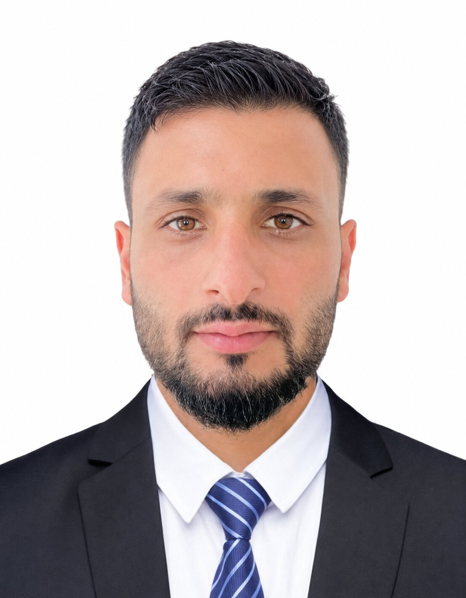

Experimental & Mountain Hydraulics
Flow dynamics, turbulence, hydraulic resistance, roughness, submerged boulders, and steep mountain channels investigated through experimental hydraulics.
Learn more →Ph.D. Researcher · Experimental Hydraulics & Water Resources
Dr B. R. Ambedkar National Institute of Technology Jalandhar
Experimental hydraulics, mountain rivers & river morphodynamics — from laboratory flows to Himalayan river systems.

My research focuses on experimental hydraulics, steep mountain-channel flow, sediment transport, river morphodynamics, and hydraulic resistance . I combine laboratory experiments, field-oriented river studies, and machine-learning methods to investigate complex hydraulic and hydrologic systems.
Particular interests include Himalayan river systems, roughness and flow resistance in open channels with bedforms and boulders, sediment transport, and AI/ML applications in water resources engineering.
Flow dynamics, turbulence, hydraulic resistance, roughness, submerged boulders, and steep mountain channels investigated through experimental hydraulics.
Learn more →Bedload transport, bed shear stress, bedforms, sediment dynamics, and morphological processes in alluvial and steep channels.
Learn more →Machine-learning and heuristic approaches for prediction of friction factor, flow resistance, shear stress, sediment transport, and related hydraulic phenomena.
Learn more →Geomorphology
Water Resources Management
Natural Hazards
Scientific Reports
Dr B. R. Ambedkar National Institute of Technology Jalandhar, Punjab, India
University of Alberta, Edmonton, Canada
NIT Srinagar, J&K, India · CGPA 7.23
University of Kashmir, J&K, India · 76.6%
For faculty, postdoctoral, research collaboration, or academic enquiries.
Dr B. R. Ambedkar National Institute of Technology Jalandhar-144008, Punjab
Mobile (IN): +91-7006231956